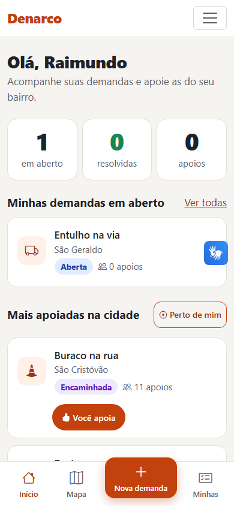
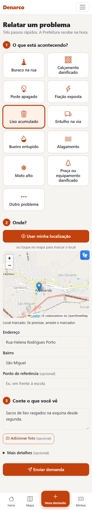
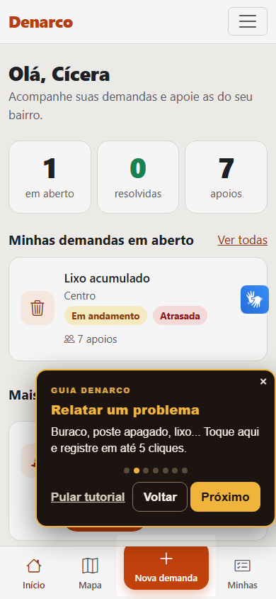
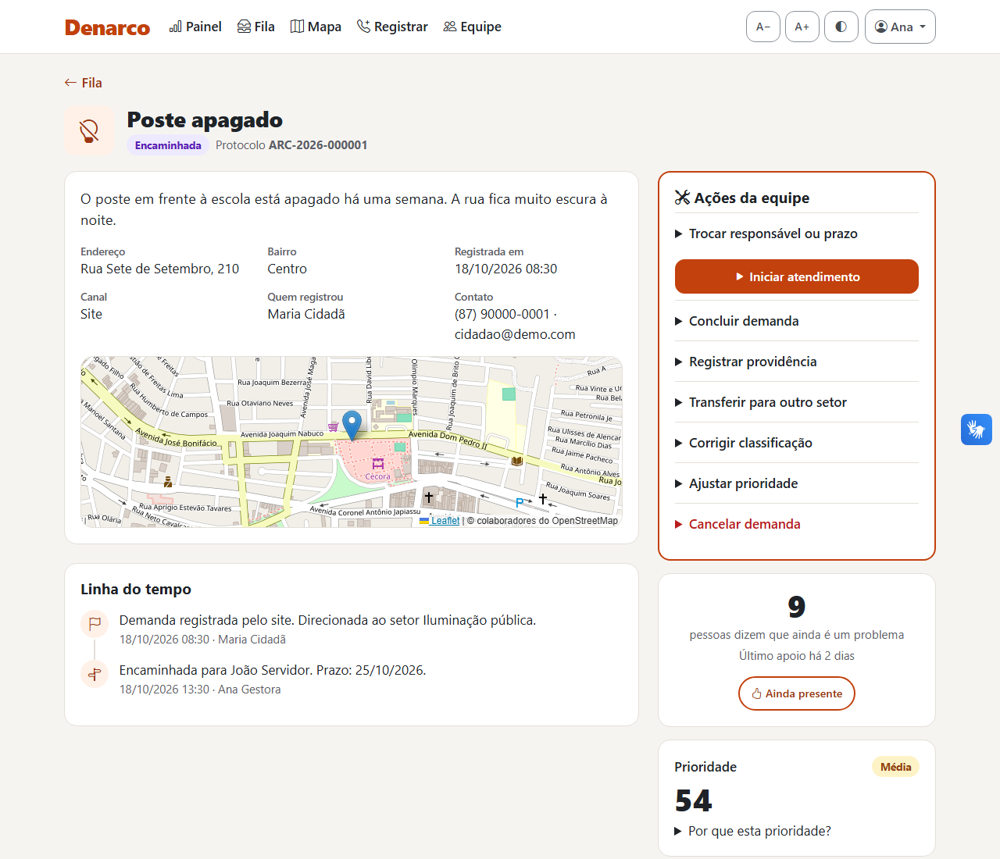
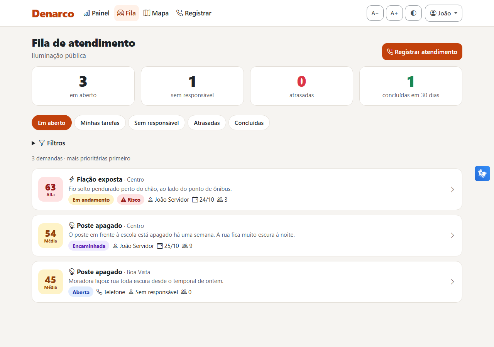
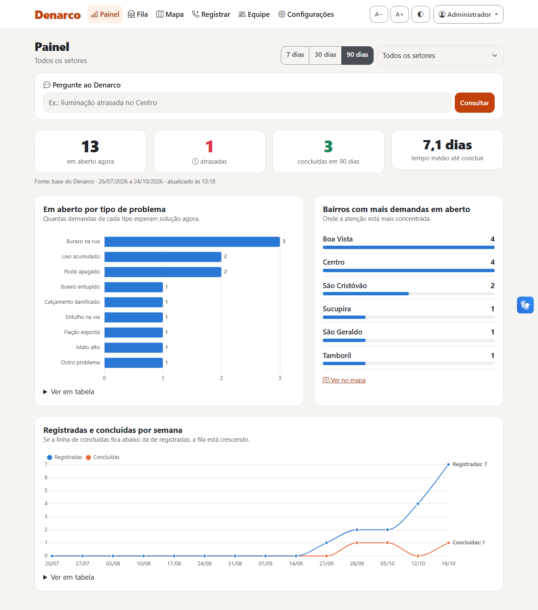
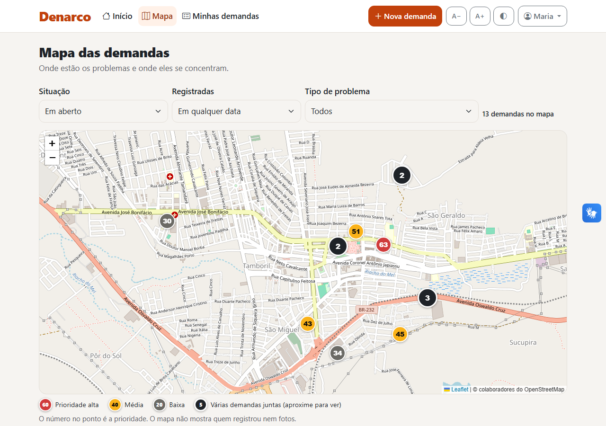
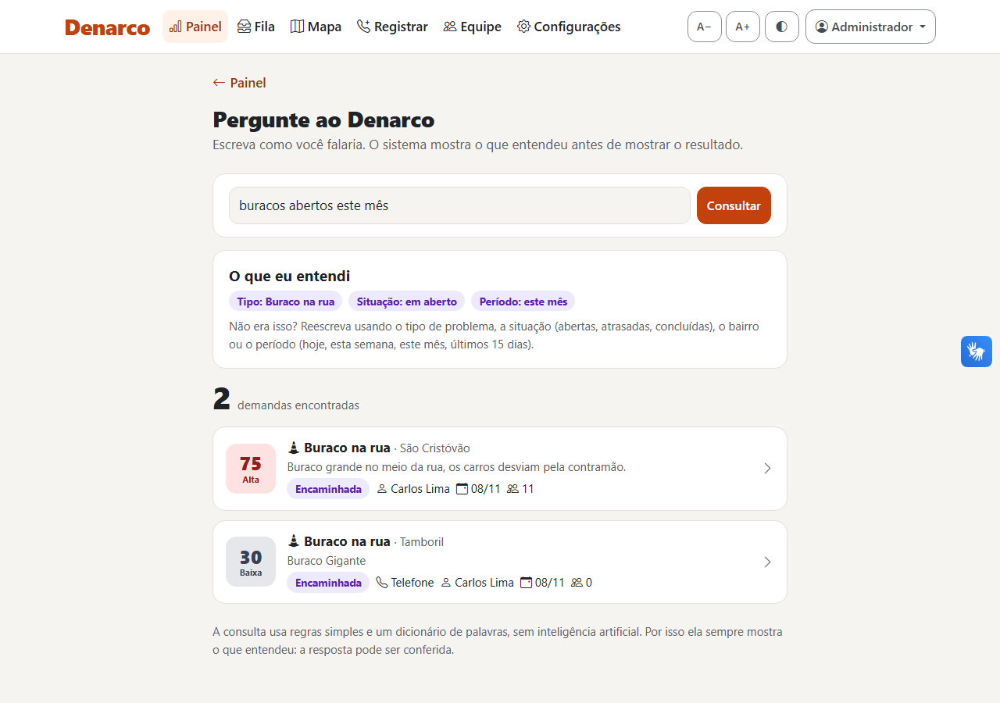
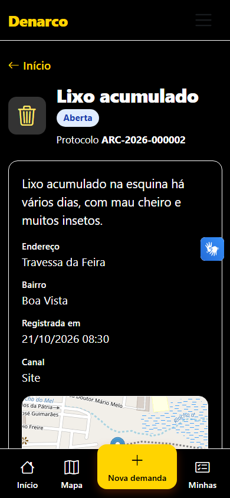

Como o sistema de demandas de serviços públicos de Arcoverde foi construído, sprint a sprint, e o que cada parte do código faz — explicado em linguagem simples.
Os capítulos 1 e 2 contam o que o sistema faz e como ele foi construído. O capítulo 3 explica, do zero, os conceitos que aparecem no resto (MVC, banco de dados, migration, hash...). Do 4 ao 13, cada capítulo pega uma parte do código e explica classe por classe. Sempre que um conceito aparece, ele vem primeiro em uma introdução simples e depois em uma caixa azul "No nosso código", mostrando onde ele está no Denarco.
Os nomes de classes, métodos e arquivos aparecem assim. Todos existem de verdade no projeto.
Buraco na rua, poste apagado, lixo acumulado, bueiro entupido. Em toda cidade esses problemas chegam à Prefeitura por vários caminhos: telefone, balcão, WhatsApp, ouvidoria. O caderno de contexto do desafio aponta o que acontece quando essas informações ficam espalhadas:
O Denarco é um site onde a população e os atendentes registram problemas da cidade num lugar só, com mapa, foto e protocolo; a Prefeitura encaminha cada um ao setor certo, define responsável e prazo, registra o que foi feito, e todos acompanham pela linha do tempo. Uma fórmula simples e visível sugere a prioridade.
Na prática, o site faz seis coisas:
| Perfil | Quem é | O que pode fazer |
|---|---|---|
| Cidadão | Morador, associação | Registra demandas, acompanha as suas, apoia as de outras pessoas, vê o mapa, reabre uma demanda até 7 dias depois de concluída. |
| Servidor | Atendimento, triagem, equipes de campo | Vê a fila do seu setor, registra pedidos recebidos por telefone, inicia o atendimento, registra providências com foto e conclui. |
| Gestor | Gestor de secretaria, planejamento e controle | Tudo do servidor, mais: define responsável e prazo, transfere de setor, corrige a classificação, ajusta a prioridade (com motivo), cancela, vê o painel, aprova contas e convida/promove servidores. |
| Administrador | Secretaria de Planejamento (responsável pelo sistema) | Tudo, em todos os setores, mais: cadastra setores e tipos de problema e pode nomear gestores e outros administradores. |
A regra de quem promove quem é simples: você só mexe em quem está abaixo de você e só dá perfis abaixo do seu (o administrador também pode nomear outro administrador). Um gestor só cuida das pessoas do próprio setor.
A melhor forma de entender o sistema é seguir uma demanda:
ARC-2026-000016. A demanda já vai sozinha para o setor de Iluminação pública, porque o tipo de problema define o setor.StatusDemanda.podeMudarPara).








Sprint é um bloco curto de trabalho com um objetivo claro e uma entrega que dá para ver funcionando. Em vez de construir tudo e só testar no final, o sistema cresce em fatias: ao fim de cada sprint a equipe roda o site, confere se está como queria e aponta ajustes antes de seguir. Isso dá controle, mostra o sistema se formando e encurta o tempo até o lançamento.
O plano original previa 4 sprints de 2 semanas. Como a entrega ficou para segunda-feira (26/10/2026), as mesmas 4 sprints foram
comprimidas em um fim de semana, cada uma com um checkpoint da equipe. O que não cabia no prazo foi listado
como "depois de segunda" no plano (seção 0.1 do PLANO_DE_IMPLEMENTACAO.md).
| Sprint | Tema | Ao final dava para ver... |
|---|---|---|
| 1 | Fundação e acesso | login, cadastro de cidadão, conta corporativa e "esqueci minha senha" funcionando no celular |
| 2 | Demandas do cidadão | registrar em até 5 cliques, aviso de duplicada, apoio "ainda presente", tutorial do cidadão |
| 3 | Atendimento pela Prefeitura | o ciclo completo (triagem → responsável e prazo → providência → conclusão), convites e promoções |
| 4 | Painéis, mapa, consulta e qualidade | painel com gráficos, mapa territorial, consulta em linguagem simples, tutoriais de todos os perfis, auditoria |
Objetivo: o projeto roda em qualquer máquina com um comando, e a pessoa consegue entrar, criar conta e recuperar a senha.
mvnw), que baixa o Maven sozinho.prod para PostgreSQL.V1 a V4: tabelas de setor, usuário e token de senha, mais os 5 setores iniciais do caderno./admin.JAVA_HOME da máquina apontava para uma pasta inexistente: passamos a usar o JDK 24 instalado (o README explica).Objetivo: o cidadão registra uma demanda em até 5 cliques, acompanha pelo protocolo e apoia demandas de outras pessoas.
V5 a V8: categorias (tipos de problema, com setor padrão e prazo), demandas, histórico e apoios.ARC-ano-número) e encaminhamento automático ao setor do tipo de problema.th:with.Objetivo: o ciclo completo funciona (registro → triagem → execução → conclusão) e cada perfil só faz o que pode.
V9 (convite) e V10 (histórico de mudanças de perfil), reabertura pelo autor em 7 dias, aviso por e-mail na conclusão e recálculo diário das prioridades às 3h.minmax(0, 1fr).Objetivo: a gestão enxerga pendências, atrasos e concentrações no território, e o sistema passa por uma auditoria de qualidade.
V11 com índices de desempenho.Ficou de fora, por escolha consciente e registrada no plano: Docker, integração contínua, bloqueio por tentativas de login, exclusão de conta pelo próprio usuário, exportação CSV, teste de carga, teste com leitor de tela real, teste de usabilidade (SUS) com moradores e servidores, backup automático, publicação em servidor com HTTPS de verdade e integração com sistemas que a Prefeitura já usa (que depende do levantamento previsto no caderno).
Este capítulo explica, do zero, as ideias que aparecem no resto do guia. Cada uma termina com uma caixa azul mostrando onde ela está no Denarco.
Quando alguém abre o Denarco, o navegador (Chrome, Edge, Safari) manda um pedido pela internet — uma requisição HTTP — para um programa que está rodando em outro computador, o servidor. O servidor monta a resposta (normalmente uma página HTML) e devolve. Existem dois tipos de pedido que importam aqui:
Cada endereço que o servidor entende (por exemplo /demandas/nova) é uma rota.
HTTPS é o mesmo HTTP, mas com a conversa criptografada entre navegador e servidor.
O servidor é o próprio sistema Java, que sobe na porta 8080 (ou 8443 com HTTPS). As rotas ficam nos controllers (capítulo 9).
Java é a linguagem em que o sistema foi escrito. Spring Boot é um conjunto de bibliotecas que já
resolve o trabalho repetitivo de um site: receber requisições, falar com o banco, cuidar do login, validar formulários. Em vez de
escrever isso do zero, a gente marca as classes com anotações (palavras com @, como @Service)
e o Spring sabe o que fazer com elas. Ele também cria os objetos e entrega um para o outro sozinho — isso se chama
injeção de dependência: um controller "pede" um service no construtor e o Spring entrega pronto.
@Service
public class DemandaService {
private final DemandaRepository demandaRepository;
// O Spring chama este construtor e entrega o repository pronto.
public DemandaService(DemandaRepository demandaRepository, ...) { ... }
}MVC (Model–View–Controller) é um jeito de separar o código em papéis:
No Denarco o MVC ganhou mais duas camadas, como a equipe pediu: Service (as regras de negócio) e Repository (o acesso ao banco). Cada camada só conversa com a vizinha:
@Valid), chama um service e devolve a tela. Não tem regra de negócio e nunca usa repository.@Transactional: ou tudo dá certo, ou nada é salvo.O banco de dados guarda tudo de forma organizada em tabelas, parecidas com planilhas. Cada linha é um registro (uma demanda) e cada coluna é uma informação (descrição, bairro, status). Dois conceitos importam:
id, um número único que identifica cada linha.demanda.setor_id guarda o id do setor. É assim que as tabelas se ligam.Para conversar com o banco usa-se a linguagem SQL (SELECT, INSERT, CREATE TABLE...).
H2 é um banco que roda dentro do próprio Java e guarda tudo num arquivo (dados/denarco.mv.db): ótimo para
desenvolver e apresentar, porque não precisa instalar nada. PostgreSQL é o banco de produção, robusto e gratuito.
O mesmo código funciona nos dois porque o H2 roda em "modo PostgreSQL" e as migrations usam SQL compatível com ambos.
Quem escolhe é o perfil de configuração: dev (H2) ou prod (PostgreSQL).
Uma migration é um arquivo SQL numerado que descreve uma mudança no banco: criar uma tabela, adicionar uma
coluna, inserir dados iniciais. A ferramenta Flyway roda as migrations em ordem quando o sistema sobe e anota numa tabela
própria (flyway_schema_history) quais já rodaram. Assim, qualquer computador chega exatamente ao mesmo banco, e a história
das mudanças fica guardada junto com o código.
V + número + __ + descrição: V6__criar_demanda.sql.V12__...).As 11 migrations ficam em src/main/resources/db/migration. O Hibernate está configurado com
ddl-auto: validate: ele não cria tabelas, só confere se as classes Java batem com as tabelas que o Flyway criou.
Se alguém esquecer uma migration, o sistema avisa na hora de subir.
No Java trabalhamos com objetos (Demanda, Usuario); no banco, com tabelas. O JPA é o padrão que
liga uma coisa à outra, e o Hibernate é quem faz esse trabalho por baixo. Uma classe marcada com @Entity
vira uma tabela; cada atributo vira uma coluna. O nome criadaEm no Java vira criada_em no banco automaticamente.
Guardar a senha das pessoas como texto seria perigoso: se alguém copiasse o banco, teria todas as senhas. Também não basta criptografar, porque criptografia é reversível: quem tem a chave volta ao texto original. Por isso senhas são guardadas como hash.
Mão dupla. Texto → código → texto, usando uma chave. Serve para mensagens que precisam ser lidas depois.
Mão única. Texto → código, e não tem volta. Serve para conferir: se a senha digitada gera o mesmo código, ela está certa.
O BCrypt é um algoritmo de hash feito para senhas. Ele tem dois truques:
usuario.senha_hash. A senha original nunca é salva.// SecurityConfig.java — o Spring Security usa este "codificador" em todo o sistema.
@Bean
public PasswordEncoder passwordEncoder() {
return new BCryptPasswordEncoder();
}
// UsuarioService.java — no cadastro, guardamos só o hash.
usuario.setSenhaHash(passwordEncoder.encode(form.getSenha()));
// No login, o próprio Spring Security chama passwordEncoder.matches(senhaDigitada, hashGuardado).A senha tem no mínimo 8 e no máximo 72 caracteres (o BCrypt só considera os primeiros 72 bytes). Um teste automático confere
que o hash começa com $2a$ e que a senha original não aparece em lugar nenhum.
Depois do login, o servidor cria uma sessão (uma "ficha" de quem está logado) e manda para o navegador um cookie com o número dessa ficha. Em cada requisição seguinte o navegador devolve o cookie, e o servidor sabe quem é. No Denarco a sessão expira depois de 30 minutos sem uso.
CSRF (falsificação de requisição) é um ataque em que um site malicioso tenta fazer o seu navegador enviar um POST para o Denarco usando a sua sessão. A defesa é um token CSRF: um código secreto que o servidor coloca em cada formulário e confere em todo POST. Um site de fora não consegue ler esse código, então o pedido falso é recusado.
O Thymeleaf coloca o token sozinho em todo <form th:action="...">. Para as chamadas feitas por JavaScript
(como marcar o tutorial como visto), o token vai numa tag <meta name="csrf-token"> no cabeçalho e é enviado
no cabeçalho da requisição.
denarco/
├── pom.xml ← dependências do projeto (Maven)
├── PLANO_DE_IMPLEMENTACAO.md ← o plano das sprints e a auditoria
├── README.md ← como rodar
└── src/
├── main/java/br/com/denarco/
│ ├── DenarcoApplication.java ← ponto de partida (método main)
│ ├── config/ ← segurança, admin inicial, dados de demonstração, tarefas agendadas
│ ├── controller/ ← rotas e telas (13 classes) — api/ guarda as rotas que devolvem JSON
│ ├── service/ ← regras de negócio (15 classes)
│ ├── repository/ ← acesso ao banco (9 interfaces)
│ ├── model/ ← entidades e enums (18 classes)
│ ├── dto/ ← formulários e respostas (17 classes)
│ ├── security/ ← como o login encontra o usuário
│ └── exception/ ← erros de negócio e "não encontrado"
├── main/resources/
│ ├── application.yml ← configurações e perfis (dev, prod, https)
│ ├── db/migration/ ← V1 a V11 (Flyway)
│ ├── templates/ ← as telas em HTML (Thymeleaf)
│ └── static/ ← CSS, JavaScript, ícone e bibliotecas (vendor/)
└── test/java/br/com/denarco/ ← 12 classes com 49 testes automáticosSão cerca de 5.600 linhas de Java e 2.800 linhas de telas, CSS e JavaScript, com comentários onde explicam o porquê de uma decisão — e não o óbvio.
Quando a Maria toca em Enviar demanda:
POST /demandas com os campos do formulário e a foto.DemandaController.registrar recebe os dados num NovaDemandaForm e o @Valid confere as regras do formulário (categoria escolhida, descrição preenchida).DemandaService.registrar aplica as regras: exige um local, descobre o setor pela categoria, trata a foto, calcula a prioridade, salva, gera o protocolo e grava o primeiro passo da linha do tempo.DemandaRepository.save transforma o objeto em INSERT no banco./demandas/ARC-..., e a página da demanda mostra "Demanda registrada!".| Arquivo | O que faz | Sprint |
|---|---|---|
V1__criar_setor.sql | Tabela dos setores da Prefeitura (nome único, ativo). | 1 |
V2__criar_usuario.sql | Tabela de usuários: nome, e-mail único, senha_hash, telefone, perfil, área de atuação, situação da conta (ATIVA/PENDENTE), setor e se já viu o tutorial. | 1 |
V3__criar_token_redefinicao_senha.sql | Tokens do "esqueci minha senha": código, dono, validade e se já foi usado. | 1 |
V4__inserir_setores_iniciais.sql | Os 5 setores do caderno: Pavimentação, Iluminação pública, Limpeza urbana, Drenagem e Conservação de espaços públicos. | 1 |
V5__criar_categoria.sql | Tipos de problema com ícone, setor padrão (encaminhamento automático) e prazo sugerido; insere os 11 tipos iniciais. | 2 |
V6__criar_demanda.sql | A tabela central: protocolo, categoria, setor, autor, responsável, descrição, status, urgência, alcance, risco, canal, quem ligou, latitude/longitude, endereço, bairro, foto, prioridade, apoios, prazo e datas. | 2 |
V7__criar_historico_demanda.sql | A linha do tempo. Só recebe inserções: nunca é alterada nem apagada (é a trilha de auditoria). | 2 |
V8__criar_apoio.sql | Os apoios, com uma restrição única (demanda, usuário): cada pessoa apoia no máximo uma vez. | 2 |
V9__criar_convite.sql | Convites: e-mail, perfil e setor autorizados por quem convidou. | 3 |
V10__criar_alteracao_perfil.sql | Auditoria de acesso: quem mudou o perfil de quem, de qual para qual, e quando. | 3 |
V11__criar_indices.sql | Índices nas colunas mais filtradas (status, setor, categoria, bairro, data, local). Índice é como o índice de um livro: deixa as buscas rápidas mesmo com milhares de linhas. | 4 |
CREATE TABLE apoio (
id BIGINT GENERATED BY DEFAULT AS IDENTITY PRIMARY KEY,
demanda_id BIGINT NOT NULL REFERENCES demanda (id),
usuario_id BIGINT NOT NULL REFERENCES usuario (id),
criado_em TIMESTAMP NOT NULL,
-- Cada pessoa apoia uma demanda no máximo uma vez.
CONSTRAINT uk_apoio_demanda_usuario UNIQUE (demanda_id, usuario_id)
);PRIMARY KEY é a chave primária; REFERENCES cria a chave estrangeira; GENERATED ... AS IDENTITY
faz o banco numerar sozinho; UNIQUE garante, no próprio banco, que não haja apoio repetido.
total_apoios): ordenar "as mais apoiadas" não precisa contar a tabela de apoios inteira a cada tela.id que o banco acabou de criar: ARC-2026-000123.dados/fotos, fora do site público.O pacote model descreve o que existe no sistema. Há dois tipos de classe:
@Entity): viram tabelas. Cada objeto é uma linha.@Enumerated(EnumType.STRING)), o que deixa o banco fácil de ler./** Um problema relatado (buraco, poste apagado...), com local, situação e prioridade. */
@Entity
public class Demanda {
@Id @GeneratedValue(strategy = GenerationType.IDENTITY)
private Long id; // chave primária, numerada pelo banco
private String protocolo;
@ManyToOne private Categoria categoria; // chave estrangeira categoria_id
@ManyToOne private Setor setor;
@Enumerated(EnumType.STRING) private StatusDemanda status;
...
public boolean isAtrasada() {
return prazo != null && status.isEmAberto() && LocalDate.now().isAfter(prazo);
}
}@ManyToOne quer dizer "muitas demandas para uma categoria": é a chave estrangeira do capítulo 5 vista do lado do Java.
| Classe | O que representa e o que tem de especial |
|---|---|
Usuario | Qualquer pessoa do sistema. Guarda o hash da senha (nunca a senha), o perfil, a área de atuação (só para contas corporativas), o setor e se já viu o tutorial. isPendente() diz se a conta corporativa espera aprovação. |
Setor | Setor da Prefeitura que atende um tipo de serviço. Pode ser desativado. |
Categoria | Tipo de problema (ex.: Poste apagado): ícone, setor padrão (para onde a demanda vai sozinha) e prazo sugerido em dias. |
Demanda | O coração do sistema. Além dos dados, tem métodos úteis para as telas: isAtrasada(), getFaixaPrioridade() (Alta ≥ 60, Média 35–59, Baixa < 35), getClassePrioridade() (a cor da etiqueta) e getLocalResumido() (bairro, ou endereço, ou "Local não informado"). |
HistoricoDemanda | Um passo da linha do tempo: quem fez, o quê (tipo), quando e uma foto opcional. Depois de salvo, nunca muda. |
Apoio | Um "ainda presente": uma pessoa confirmando que o problema continua. |
TokenRedefinicaoSenha | O código do link de "esqueci minha senha". isValido() = ainda não usado e dentro dos 30 minutos. |
Convite | Autorização prévia para um e-mail entrar com perfil e setor definidos. isPendente() = nem usado nem cancelado. |
AlteracaoPerfil | Registro de auditoria: quem mudou o perfil de quem, de qual para qual, e quando. |
| Enum | Valores e regra |
|---|---|
Perfil | CIDADAO, SERVIDOR, GESTOR, ADMIN — nesta ordem, porque a ordem é usada para comparar níveis: acimaDe(outro) e peloMenos(outro) decidem quem pode promover quem. |
Atuacao | Atendimento e triagem, Equipe de campo, Gestão de secretaria, Planejamento e controle (o público-alvo do desafio). Cada uma sugere um perfil a quem for aprovar. |
StatusConta | ATIVA ou PENDENTE (conta corporativa esperando aprovação). |
StatusDemanda | ABERTA, ENCAMINHADA, EM_ANDAMENTO, CONCLUIDA, CANCELADA. O método podeMudarPara(novo) é o diagrama da Figura 1 em código; emAberto() devolve as três primeiras. |
Urgencia | Baixa (10 pontos), Média (20), Alta (35). Os pontos entram na prioridade. |
Alcance | Um ponto ou imóvel (5), Uma rua (10), Bairro ou mais (20). |
Canal | APP (site), TELEFONE, PRESENCIAL, WHATSAPP — guardar o canal é o que permite juntar todos numa base só. |
TipoHistorico | CRIACAO, ENCAMINHAMENTO, STATUS, PROVIDENCIA, PRIORIDADE, CANCELAMENTO, CONCLUSAO — cada um com o ícone da linha do tempo. |
MotivoCancelamento | Duplicada, Problema não encontrado no local, Não é responsabilidade da Prefeitura. |
Um repository é uma interface: a gente só declara os métodos, e o Spring Data JPA escreve o SQL. Existem dois jeitos:
findByEmail(String email) vira SELECT ... WHERE email = ?. Palavras como findBy, And, OrderBy, countBy, existsBy e Top8 são entendidas automaticamente.@Query: quando a consulta é mais elaborada, escrevemos em JPQL, que é parecido com SQL mas fala de classes e atributos Java (d.categoria.nome) em vez de tabelas e colunas.Todo repository herda de JpaRepository, que já traz save, findById, findAll, delete e count.
@Query("""
select new br.com.denarco.dto.Contagem(d.categoria.nome, count(d)) from Demanda d
where (:setorId is null or d.setor.id = :setorId) and d.status in :status
group by d.categoria.nome
order by count(d) desc
""")
List<Contagem> contarPorCategoria(@Param("setorId") Long setorId,
@Param("status") Collection<StatusDemanda> status);A conta é feita no banco (count + group by), não num laço no Java: é muito mais rápido.
O truque (:setorId is null or ...) deixa o filtro opcional: sem setor, conta a cidade toda.
Os parâmetros (:setorId) são sempre separados do texto da consulta, o que protege contra SQL injection.
| Repository | Métodos principais e para que servem |
|---|---|
UsuarioRepository | findByEmail (login), existsByEmail (e-mail repetido), existsByPerfil (já existe admin?), listas de pendentes, da equipe e de possíveis responsáveis de um setor. |
SetorRepository | Setores ativos em ordem alfabética; busca por nome. |
CategoriaRepository | Categorias ativas; busca por nome. |
DemandaRepository | O maior: busca por protocolo, demandas de um autor, as mais apoiadas, buscarNaRegiao (um "quadrado" de latitude/longitude em volta de um ponto), buscarFila (a fila com filtros opcionais e paginação), contagens do resumo, dados do painel, pontos do mapa e buscarConsulta (a consulta em linguagem simples). |
HistoricoDemandaRepository | A linha do tempo de uma demanda, em ordem. |
ApoioRepository | O apoio de uma pessoa numa demanda; idsApoiados descobre, numa consulta só, quais demandas de uma lista a pessoa já apoiou (para pintar o botão). |
TokenRedefinicaoSenhaRepository | Busca o token do link. |
ConviteRepository | O convite pendente mais recente de um e-mail; convites pendentes (todos ou de um setor). |
AlteracaoPerfilRepository | As 10 mudanças de acesso mais recentes (todas ou de um setor). |
É aqui que mora a inteligência do sistema. Um service recebe um pedido do controller, confere as regras, usa os repositories
para ler e gravar, e devolve o resultado. Quando uma regra não é cumprida, ele lança uma NegocioException com uma mensagem
escrita para a pessoa ("Escolha um prazo de hoje em diante."), que o controller mostra na tela.
UsuarioService — contascadastrarCidadao: confere se o e-mail já existe, guarda o hash da senha e cria a conta ATIVA como cidadão.cadastrarCorporativo: cria a conta como cidadão PENDENTE, com a área de atuação e o setor pedidos. Se existe um convite para aquele e-mail, a conta já nasce aprovada com o perfil e o setor do convite, e a mudança é registrada.normalizarEmail: minúsculas e sem espaços, para "Maria@X.com " e "maria@x.com" serem a mesma conta.criarContaAtiva (admin inicial e dados de demonstração), concluirTutorial, buscar.SenhaService e EmailService — esqueci minha senhasolicitarRedefinicao: cria um token aleatório (UUID) válido por 30 minutos e manda o link por e-mail. Se o e-mail não existe, não faz nada — e a tela mostra a mesma mensagem nos dois casos, para não revelar quem tem conta.redefinir: só aceita token válido e não usado; troca o hash da senha e marca o token como usado.EmailService.enviar: usa o servidor de e-mail configurado. Sem servidor (como na demonstração), mostra o e-mail no console e o link na própria tela.DemandaService — registrar e consultar demandasregistrar (cidadão) e registrarPorAtendente (telefone, balcão, WhatsApp): exigem um local (ponto no mapa ou endereço/referência escritos — se o GPS falhar, ainda dá para registrar), pegam o setor da categoria, tratam a foto, calculam a prioridade, salvam, geram o protocolo e escrevem o primeiro passo da linha do tempo.possiveisDuplicadas: demandas abertas da mesma categoria a até 100 metros. Primeiro o banco filtra um "quadrado" de latitude/longitude (rápido); depois o Java calcula a distância exata com a fórmula de Haversine, que considera a curvatura da Terra.pertoDe: até 8 demandas de outras pessoas num raio de 2 km (tela "Perto de você").podeVerDadosPrivados: regra da LGPD — nome, contato e foto do autor só para o próprio autor, o admin e a equipe do setor responsável.recalcularPrioridades: usado toda madrugada, porque os "dias em aberto" mudam a pontuação.PrioridadeService — a fórmula| Fator | Pontos |
|---|---|
| Urgência | Baixa 10 · Média 20 · Alta 35 · Risco à segurança 50 |
| Alcance | Um ponto ou imóvel 5 · Uma rua 10 · Bairro ou mais 20 |
| Apoios | 2 por apoio, no máximo 20 |
| Tempo em aberto | 1 por dia, no máximo 10 |
explicar devolve cada parte da conta (é o que aparece em "Por que esta prioridade?"), calcular soma, e
atualizar grava na demanda — a não ser que um gestor tenha fixado outro valor. Os limites existem de propósito:
uma demanda muito curtida não pode passar na frente de um problema com risco real.
// Apoios valem no máximo 20 pontos: uma demanda muito apoiada
// não pode passar na frente de um problema com risco à segurança.
private static final int MAXIMO_PONTOS_APOIO = 20;FotoService — fotos sem dados escondidosFotos de celular carregam metadados (EXIF) com a localização GPS e o modelo do aparelho. salvar lê a imagem, reduz para no
máximo 1600 px e redesenha como um JPG novo: o arquivo resultante não tem mais esses dados. O nome do arquivo é um código
aleatório, e as fotos ficam fora da pasta pública: só são entregues por um controller que confere a permissão.
HistoricoService — a linha do tempoSó tem registrar e listar. Não existe "editar" nem "apagar" — por isso o histórico serve como prova de quem fez o quê e quando.
ApoioService — "ainda presente"alternar: o primeiro clique apoia, o segundo desfaz. O autor não apoia a própria demanda, e demanda encerrada não recebe apoio. Cada apoio recalcula a prioridade.transferirApoio: quando uma demanda é cancelada por ser duplicada, quem a registrou passa a apoiar a original.AtendimentoService — o trabalho da equipeÉ o maior service. Primeiro, as permissões, que são conferidas com os dados atuais do banco (não só os da sessão):
enxergaTodosOsSetores: admin, ou gestor sem setor (planejamento e controle).podeAtender: servidor ou gestor do setor da demanda (ou quem enxerga todos).podeGerir: o mesmo, mas só para gestor ou acima.Depois, a fila (fila e resumo), com as abas e os filtros, 20 por página, em ordem de prioridade.
E as ações, cada uma conferindo permissão e situação, mudando a demanda e escrevendo na linha do tempo:
| Método | O que faz |
|---|---|
encaminhar | Define responsável (tem que ser da equipe do setor) e prazo (de hoje em diante). Aberta → Encaminhada. |
transferirSetor | Muda o setor, com motivo obrigatório; limpa responsável e prazo. |
corrigirClassificacao | Corrige urgência, alcance e risco e recalcula a prioridade, anotando o que mudou. |
fixarPrioridade / voltarPrioridadeAutomatica | O gestor passa por cima da fórmula, com motivo obrigatório; ou volta ao cálculo. |
cancelar | Cancela com motivo; se for duplicada, liga à original e transfere o apoio. |
iniciar, registrarProvidencia, concluir | O caminho de quem executa. Concluir exige dizer o que foi feito, aceita foto e avisa por e-mail quem registrou pelo site. |
podeReabrir / reabrir | O autor reabre em até 7 dias depois de concluída; o gestor do setor, a qualquer momento. |
Todas as mudanças de situação passam por mudarStatus, que pergunta ao StatusDemanda.podeMudarPara se aquela
passagem é permitida. Ninguém pula etapa.
EquipeService — pessoas, convites e perfispublic static boolean podeGerenciar(Usuario ator, Usuario alvo) {
// Só gestor ou admin cuida de pessoas, e nunca de si mesmo ou de alguém do mesmo nível.
if (!ator.getPerfil().peloMenos(Perfil.GESTOR) || ator.getId().equals(alvo.getId())
|| !ator.getPerfil().acimaDe(alvo.getPerfil())) {
return false;
}
if (ator.getPerfil() == Perfil.ADMIN || ator.getSetor() == null) {
return true;
}
// Gestor de setor: cidadãos (sem setor) ou pessoas do próprio setor.
return alvo.getSetor() == null || alvo.getSetor().getId().equals(ator.getSetor().getId());
}podeConceder: só se dá perfil abaixo do seu (o admin pode dar admin).alterarPerfil, aprovar, recusar: aplicam as regras e registram em AlteracaoPerfil. Um gestor de setor sempre coloca a pessoa no próprio setor, mesmo que peça outro.convidar / cancelarConvite: convite para quem ainda não tem conta.PainelService, MapaService e ConsultaService — enxergar o todoPainelService: os quatro números do topo, os dados dos gráficos (por tipo, por semana e por bairro) e o tempo médio até concluir, em texto amigável ("2,5 dias", "6 horas").MapaService: os pontos do mapa, com apenas dados públicos (sem autor, contato ou foto).ConsultaService: transforma uma frase em filtros, sem inteligência artificial. Tira acentos e maiúsculas, procura tipos de problema (por um dicionário: "buraco", "poste", "lixo", "bueiro"... e pelos nomes cadastrados), setor, situação ("atrasada", "concluídas", "sem responsável"), período ("hoje", "esta semana", "este mês", "últimos 15 dias"), bairro (entre os que já apareceram) e ordem ("mais apoiadas"). Devolve o que entendeu junto com o resultado, para a pessoa conferir. O texto nunca vira SQL: ele só escolhe valores para uma consulta fixa.SetorService e CategoriaServiceListar, buscar, criar e ativar/desativar setores e tipos de problema (com setor padrão e prazo entre 1 e 365 dias).
Um controller liga uma rota a um método Java. As anotações dizem qual rota cada método atende:
@GetMapping("/demandas/nova") — atende um GET nesse endereço.@PostMapping("/demandas") — atende um POST (envio de formulário).@PathVariable — pega um pedaço do endereço (o {id} de /demandas/{id}/apoio).@RequestParam — pega um campo do formulário ou da URL (?dias=30).@AuthenticationPrincipal UsuarioLogado — entrega quem está logado.O método devolve o nome da tela ("demanda/nova" = templates/demanda/nova.html) ou um
redirect ("redirect:/demandas/ARC-..."). Depois de toda ação POST o sistema faz um redirect: assim, se a
pessoa recarregar a página, a ação não é repetida. A mensagem "Demanda concluída" viaja no redirect como atributo flash,
que vive só até a próxima tela.
@PostMapping("/demandas")
public String registrar(@Valid @ModelAttribute("form") NovaDemandaForm form, BindingResult resultado,
@AuthenticationPrincipal UsuarioLogado logado, Model model, RedirectAttributes redirect) {
if (!resultado.hasErrors()) {
try {
Demanda demanda = demandaService.registrar(form, logado.getId());
redirect.addFlashAttribute("criada", true);
return "redirect:/demandas/" + demanda.getProtocolo();
} catch (NegocioException e) {
resultado.reject("negocio", e.getMessage()); // mostra o erro em cima do formulário
}
}
prepararFormulario(model);
return "demanda/nova"; // volta ao formulário com os erros
}| Controller | Rotas | Para que serve · quem pode |
|---|---|---|
AuthController | GET /login, GET /privacidade | Tela de entrar e aviso de privacidade · público. O POST do login é do próprio Spring Security. |
CadastroController | GET/POST /cadastro, GET/POST /cadastro/corporativo | Criar conta de cidadão e conta corporativa · público. |
SenhaController | GET/POST /senha/esqueci, GET/POST /senha/redefinir | Pedir o link e criar a nova senha · público. |
InicioController | GET / | Tela inicial: cidadão vê o seu início; servidor vai para a fila; gestor e admin, para o painel. |
DemandaController | GET /demandas/nova, POST /demandas, GET /demandas/{protocolo}, GET /demandas/minhas, POST /demandas/{id}/apoio, POST /demandas/{id}/reabrir, GET /demandas/{id}/foto, GET /historico/{id}/foto | Registrar, ver detalhes (com as ações da equipe para quem pode), listar as suas, apoiar, reabrir e servir fotos com checagem de permissão · logado. |
DemandaApiController | GET /api/demandas/proximas | JSON do aviso de duplicada (sem dados de quem registrou) · logado. |
TutorialController | POST /tutorial/concluido | Marca o tutorial como visto · logado. |
AtendimentoController | GET /atendimento, GET/POST /atendimento/registrar, POST /atendimento/demandas/{id}/iniciar, .../providencia, .../concluir | Fila, registro por telefone e ações de quem executa · servidor ou acima. |
GestaoController | POST /gestao/demandas/{id}/encaminhar, /transferir, /classificacao, /prioridade, /prioridade/automatica, /cancelar; GET /gestao/equipe; POST /gestao/equipe/{id}/aprovar, /recusar, /perfil; POST /gestao/convites, /gestao/convites/{id}/cancelar | Decisões sobre a demanda e cuidado da equipe · gestor ou acima. |
AdminController | GET /admin/configuracoes; POST /admin/setores, /admin/setores/{id}/ativo, /admin/categorias, /admin/categorias/{id}, /admin/categorias/{id}/ativa | Setores e tipos de problema · admin. |
PainelController | GET /painel, GET /api/painel, GET /consulta | Painel, dados dos gráficos em JSON e consulta em linguagem simples · servidor ou acima. |
MapaController | GET /mapa, GET /api/mapa | Mapa e seus pontos em JSON · logado (só dados públicos). |
DadosGlobais | (nenhuma rota) | Um @ControllerAdvice que coloca o usuário logado em todas as telas, para o cabeçalho e o menu. |
As permissões são conferidas duas vezes: na rota (o Spring Security barra um cidadão em /atendimento) e na
regra (o service confere se aquele servidor é do setor daquela demanda). Assim, mesmo que alguém digite o endereço de uma
ação à mão, recebe "acesso negado".
O Spring Security é a "portaria" do sistema: toda requisição passa por ele antes de chegar a um controller. Ele confere
quem é a pessoa (autenticação) e se ela pode entrar ali (autorização). Toda a configuração está em uma classe, SecurityConfig.
@Bean
public SecurityFilterChain filtroDeSeguranca(HttpSecurity http) throws Exception {
http
.authorizeHttpRequests(acesso -> acesso
.requestMatchers("/login", "/cadastro", "/cadastro/corporativo", "/senha/**",
"/privacidade", "/error", "/css/**", "/js/**", "/img/**", "/vendor/**").permitAll()
.requestMatchers("/admin/**").hasRole("ADMIN")
.requestMatchers("/gestao/**").hasRole("GESTOR")
.requestMatchers("/atendimento/**", "/painel/**", "/api/painel/**", "/consulta/**").hasRole("SERVIDOR")
.anyRequest().authenticated())
.formLogin(login -> login.loginPage("/login").usernameParameter("email").passwordParameter("senha")
.defaultSuccessUrl("/", true).failureUrl("/login?erro"))
.logout(logout -> logout.logoutSuccessUrl("/login?saiu"));
return http.build();
}| Peça | O que faz |
|---|---|
| Rotas públicas e por perfil | As regras acima. "Todo o resto" exige login. |
RoleHierarchy | ADMIN > GESTOR > SERVIDOR > CIDADAO: quem está acima herda as permissões de baixo (o admin entra em /gestao sem precisar repetir a regra). |
BCryptPasswordEncoder | Calcula e confere os hashes de senha (capítulo 3.7). |
UsuarioDetailsService | Ensina o Spring Security a achar a pessoa pelo e-mail na hora do login. |
UsuarioLogado | O que fica guardado na sessão depois do login: id, nome, e-mail, perfil e setor. Transforma o perfil em "papel" do Spring (ROLE_GESTOR). Mudanças de perfil valem a partir do próximo login. |
| Formulário de login e sessão | O próprio Spring Security recebe o POST do login, cria a sessão (30 min) e cuida do logout. |
| CSRF | Ligado por padrão; o token vai em todo formulário (capítulo 3.8). |
| Cabeçalhos de segurança | O Spring Security já envia cabeçalhos que impedem, por exemplo, que o site seja aberto escondido dentro de outro site. |
textContent, não innerHTML (evita XSS).dto)DTO quer dizer "objeto de transferência de dados": são classes só para carregar dados de um lado para o outro. Há dois tipos:
CadastroForm, CadastroCorporativoForm, RedefinirSenhaForm, NovaDemandaForm, FiltroFila. As anotações de validação moram aqui, com mensagens em português que dizem como corrigir: @NotBlank(message = "Informe seu nome."), @Email, @Size(min = 8), @AssertTrue (aceite do aviso de privacidade).record, uma forma curta do Java para objetos só de leitura): ResumoCidadao, ResumoFila, ResumoPainel, DadosGraficos, Contagem, Intervalo, PontoMapa, DemandaProxima, DemandaProximaResposta, ParcelaPrioridade, ResultadoConsulta; e o enum AbaFila.NegocioException: uma regra não foi cumprida. A mensagem é para o usuário e aparece na tela.NaoEncontradoException: algo pedido pela URL não existe (ou a pessoa não pode ver). Vira a página 404 amigável.AccessDeniedException) e vira a página 403. Nenhuma página de erro mostra detalhes técnicos.config e application.yml)| Classe ou arquivo | O que faz |
|---|---|
SecurityConfig | Capítulo 10. |
DadosIniciais | Na primeira execução, cria o administrador a partir de ADMIN_EMAIL e ADMIN_SENHA. Nenhuma senha no código. |
DadosDemo | Só no perfil dev: cria contas, servidores, moradores, 15 demandas, apoios, histórico e um convite — tudo fictício, como pede o caderno para demonstrações. |
TarefasAgendadas | Todo dia às 3h recalcula as prioridades das demandas abertas (@Scheduled). |
Formatador | Textos amigáveis nas telas: "há 3 dias", "80 m", "1,2 km". |
application.yml | Configurações por perfil: dev (H2 em arquivo, modo demonstração), prod (PostgreSQL com senha por variável de ambiente), https (porta 8443 com certificado de demonstração) e test (H2 em memória, só para os testes). |
As telas são arquivos HTML com atributos th: que o Thymeleaf preenche no servidor antes de mandar a página:
<!-- repete o card para cada demanda e escreve o nome da categoria -->
<th:block th:each="d : ${minhasAbertas}">
<article th:replace="~{fragmentos :: cartaoDemanda(${d}, null, null, '/')}"></article>
</th:block>
<span th:text="${d.categoria.nome}">Poste apagado</span>
<div th:if="${usuario.pendente}">Seu pedido está esperando aprovação...</div>th:text escreve um valor (e já protege contra código malicioso); th:each repete; th:if mostra só se for verdade; th:field liga um campo ao formulário; th:replace inclui um fragmento.fragmentos.html guarda os pedaços reaproveitados: cabeçalho e menu (que mudam por perfil), barra inferior do celular, card de demanda, item da fila, botão "Ainda presente", mensagens, campos do cadastro e a barra de acessibilidade.| Pasta de telas | Telas |
|---|---|
auth/ | login, cadastro, cadastro corporativo, esqueci a senha, nova senha, aviso de privacidade |
inicio/, demanda/ | início do cidadão; nova demanda (também no modo atendente), detalhe, minhas demandas |
atendimento/, gestao/, admin/ | fila; equipe; configurações |
painel/, mapa/ | painel e consulta; mapa |
error.html | página amigável para 403, 404 e erros inesperados |
static)| Arquivo | O que faz |
|---|---|
css/app.css | Cores e tamanhos centralizados em variáveis (mudar uma cor muda todas as telas), letra grande só onde importa, etiquetas de status (sempre cor + texto), versão celular e o modo alto contraste. |
js/app.js | A+ / A−, alto contraste (lembrados no navegador) e o botão "mostrar senha". |
js/nova-demanda.js | Revela os passos do formulário, cuida do mapa e do GPS, preenche endereço e bairro pelo OpenStreetMap, procura duplicadas e reduz a foto no celular antes de enviar. |
js/tutorial.js | O tour guiado de cada perfil (Driver.js), com bolinhas de progresso e "Pular tutorial". |
js/painel.js | Busca /api/painel e desenha os gráficos (Chart.js), o ranking de bairros e as tabelas "Ver em tabela". |
js/mapa.js | Busca /api/mapa e desenha os pontos com a prioridade, agrupando os próximos. |
Bibliotecas usadas (todas gratuitas e de código aberto, guardadas dentro do projeto em static/vendor para não depender
de internet na apresentação): Bootstrap 5 (layout e componentes), Bootstrap Icons, Leaflet e Leaflet.markercluster (mapa), Chart.js (gráficos)
e Driver.js (tutorial). O mapa usa o OpenStreetMap e o widget de Libras é o VLibras do governo federal (esses dois precisam de internet).
Um teste automático é um pedaço de código que usa o sistema e confere se o resultado é o esperado. Rodando
mvnw test, os 49 testes executam em menos de um minuto. Se alguém mudar uma regra sem querer, um teste fica vermelho.
| Classe de teste | Testes | O que garante |
|---|---|---|
DenarcoApplicationTests | 1 | O sistema sobe: migrations rodam e entidades batem com as tabelas. |
PermissoesRotasTest | 7 | Cada perfil só entra onde pode; servidor não mexe em demanda de outro setor nem pela URL; gestor começa no painel. |
UsuarioServiceTest | 4 | Hash BCrypt, e-mail normalizado e único, conta corporativa pendente, setor obrigatório. |
SenhaServiceTest | 4 | Token válido troca a senha; expirado ou já usado não; e-mail inexistente não gera token. |
PrioridadeServiceTest | 4 | A fórmula (o exemplo 72 do plano), os limites, o risco e a prioridade fixada pelo gestor. |
ApoioServiceTest | 4 | Apoiar/desfazer, autor não apoia a própria demanda, encerrada não recebe apoio. |
DemandaServiceTest | 2 | Distância (100 m) e formato do protocolo. |
StatusDemandaTest | 3 | O diagrama de situações: caminhos permitidos e proibidos. |
AtendimentoServiceTest | 7 | Quem atende e quem gere, encaminhar, prazo no passado, concluir sem responsável, aviso ao autor, motivo obrigatório. |
EquipeServiceTest | 5 | Quem promove quem, gestor preso ao próprio setor, ninguém mexe em si mesmo. |
ConsultaServiceTest | 4 | A frase vira os filtros certos (com e sem acento), servidor não consulta outro setor. |
PainelServiceTest | 4 | Tempo médio em dias e horas, período inválido volta para 30 dias. |
A ISO/IEC 25010 (versão 2023) é um modelo de qualidade de software com 9 características. Ela não traz regras prontas; por isso cada característica virou ações concretas no código e uma forma de verificar:
| Característica | O que fizemos | Como verificamos |
|---|---|---|
| Adequação funcional | Cada requisito do desafio ligado a uma sprint (tabela R01–E06 do plano). | 49 testes; demonstração do ciclo completo. |
| Eficiência de desempenho | Paginação de 20, índices (V11), contas feitas no banco, fotos reduzidas. | Telas abrem instantaneamente com os dados de demonstração. |
| Compatibilidade | HTML padrão, JSON para integrações futuras, PostgreSQL ou H2. | Testado em telas de celular e computador. |
| Capacidade de interação (usabilidade) | Até 5 cliques, tutorial por perfil, letra grande, mensagens que dizem como corrigir, A+/A−, alto contraste, VLibras, teclado, cor sempre com texto. | 0 violações do axe-core (WCAG 2.2 A/AA) em 17 telas, nos dois modos; nenhuma rolagem horizontal a 375 px. |
| Confiabilidade | Transações, página de erro amigável, registro sem GPS (endereço escrito). | Testes de integração. |
| Segurança | BCrypt, perfis + escopo por setor, CSRF, sessão de 30 min, token de uso único, histórico imutável, defesa em camadas. | Testes de permissão por rota e por regra. |
| Manutenibilidade | Camadas, nomes em português, comentários de "porquê", migrations versionadas. | Build e testes com um comando. |
| Flexibilidade | Configuração por perfil e variáveis de ambiente, setores e tipos editáveis, só software livre. | Mesmo código em H2 e PostgreSQL; perfil HTTPS. |
| Segurança operacional | "Há risco à segurança?" leva a prioridade ao máximo e mostra 193 (Bombeiros) e 199 (Defesa Civil); a fórmula só sugere, quem decide é a equipe. | Teste da fórmula com risco. |
dev).Só é preciso o JDK 21 ou mais novo. No Windows (PowerShell), dentro da pasta do projeto:
$env:JAVA_HOME = "C:\Program Files\Java\jdk-24" # ajuste para o seu JDK
.\mvnw.cmd spring-boot:run # abre em http://localhost:8080
.\mvnw.cmd test # roda os 49 testesPara começar do zero, pare o sistema e apague a pasta dados/. Para testar o GPS no celular, use o perfil https (o README explica).
demo1234)| Perfil | |
|---|---|
cidadao@demo.com | Cidadã (Maria) |
servidor@demo.com | Servidor de Iluminação pública (João) |
gestor@demo.com | Gestora de Iluminação pública (Ana) |
admin@demo.com | Administrador |
pendente@demo.com | Conta corporativa esperando aprovação (Pedro) |
convidado@demo.com | Ainda sem conta, mas com convite: ao criar a conta corporativa, entra como servidor da Limpeza urbana |
| Termo | Significado simples |
|---|---|
| Anotação | Palavra com @ que diz ao Spring o papel de uma classe ou método (@Service, @GetMapping). |
| API / JSON | Rota que devolve dados (em formato JSON) em vez de uma página; usada pelo JavaScript dos gráficos e do mapa. |
| BCrypt | Algoritmo de hash próprio para senhas: lento de propósito e com sal. |
| Bean | Objeto criado e gerenciado pelo Spring, que ele entrega para quem pedir. |
| Chave primária / estrangeira | O id único de cada linha / a coluna que aponta para a linha de outra tabela. |
| Controller | Classe que recebe as requisições de uma rota e escolhe a resposta. |
| CSRF | Ataque em que outro site tenta agir em seu nome; bloqueado com um token secreto em cada formulário. |
| DTO | Classe só para carregar dados (formulários e respostas). |
| Entidade | Classe Java ligada a uma tabela do banco (@Entity). |
| Enum | Lista fixa de valores possíveis (os perfis, as situações). |
| Flyway / migration | Ferramenta que aplica, em ordem, os arquivos SQL que constroem o banco. |
| Fragmento | Pedaço de tela reaproveitado em várias páginas. |
| H2 / PostgreSQL | Banco de desenvolvimento (um arquivo, sem instalar) / banco de produção. |
| Hash | Transformação de mão única: dá para conferir, não dá para desfazer. |
| HTTP / HTTPS | O "idioma" entre navegador e servidor / o mesmo, criptografado. |
| JPA / Hibernate | O padrão e a ferramenta que traduzem objetos Java para linhas do banco. |
| JPQL | Linguagem de consulta parecida com SQL, mas escrita com classes e atributos Java. |
| LGPD | Lei Geral de Proteção de Dados (Lei 13.709/2018). |
| MVC | Model–View–Controller: separar dados, telas e quem coordena. |
| Perfil (de configuração) | Conjunto de configurações para um ambiente: dev, prod, https, test. |
| Protocolo | O código de cada demanda (ARC-2026-000123), usado para acompanhar. |
| Redirect / flash | Mandar o navegador para outra página depois de uma ação / mensagem que vive só até a próxima página. |
| Repository | Interface que acessa o banco; o Spring Data escreve as consultas. |
| Rota | Endereço que o servidor entende (/atendimento). |
| Sal (salt) | Valor aleatório misturado à senha antes do hash, para que senhas iguais tenham hashes diferentes. |
| Service | Classe com as regras de negócio. |
| Sessão / cookie | A "ficha" de quem está logado no servidor / o número dessa ficha guardado no navegador. |
| Spring Boot / Spring Security | Bibliotecas que dão a base do site / a portaria de login e permissões. |
| Sprint | Bloco curto de trabalho com uma entrega que dá para ver funcionando. |
| Thymeleaf | Ferramenta que preenche as telas HTML com os dados no servidor. |
| Token | Código secreto e temporário (do link de nova senha, do CSRF). |
| Transação | Grupo de mudanças no banco que acontece por inteiro ou não acontece (@Transactional). |
| WCAG | Diretrizes internacionais de acessibilidade na web; usamos o nível AA. |
| XSS | Ataque que tenta fazer um texto virar código na página de outra pessoa; evitado mostrando texto sempre como texto. |
PLANO_DE_IMPLEMENTACAO.md (o plano, os requisitos do desafio e a auditoria) · README.md (como rodar) ·
os comentários no topo de cada classe, que dizem o papel dela em uma ou duas frases.